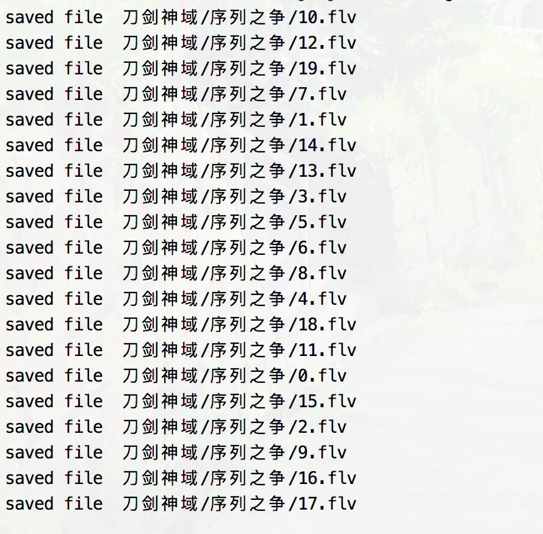
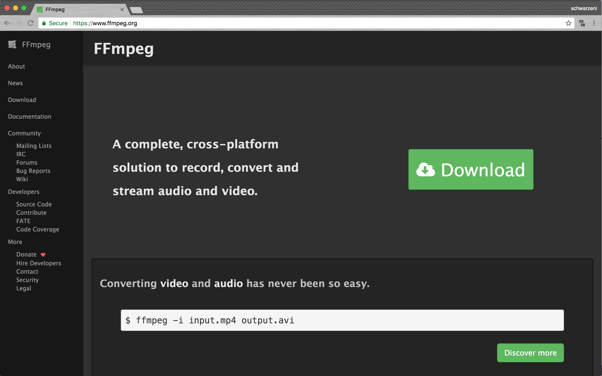
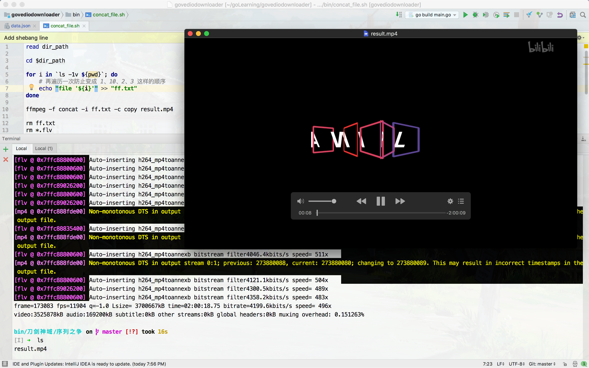

承接前面b站视频下载思路的科普文，实现对大量分段视频的拼接
环境
操作系统：MacOS 10.13.4
视频连接工具：ffmpeg v4.0
前言
如果你已经实现了b站视频的下载程序，那么下载完应该是一大堆分段的

之前一直苦于找不到好的视频拼接工具，今天偶然发现了一个，ffmpeg，而且是跨平台的，非常nice

我是使用Mac的，所以就用homebrew直接安装，快捷方便
1 | brew install ffmpeg |
使用方式
由于分段视频较多，所以我们使用bash脚本来自动化执行拼接程序
1 | # 获取存储分段视频的路径，在命令行中输入 |
测试
把b站的刀剑神域序列之争1080p+扒下来总共21个分段3.7G，配合bash脚本，拼接就用了16s，非常nice
